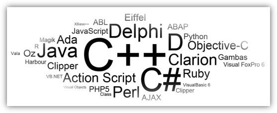
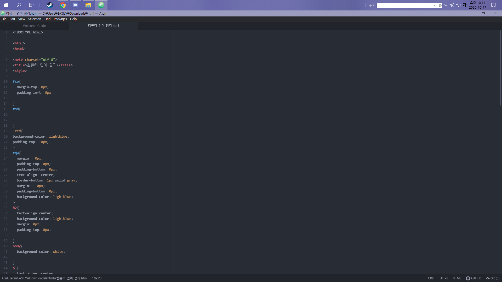
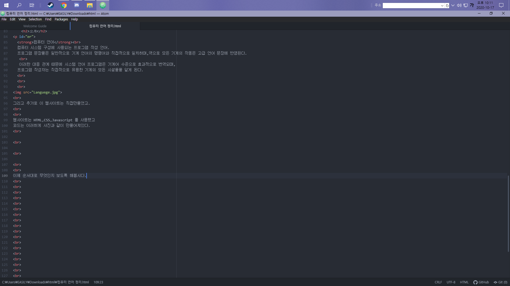

-
/ Javascript / C언어 (C++ 등 통합) / Python / Java / 영상 /
소계
컴퓨터 언어
컴퓨터 시스템 구성에 사용되는 프로그램 작성 언어.
프로그램 문장들은 일반적으로 기계 언어의 명령어와 직접적으로 일치하며,역으로 모든 기계의 작동은 고급 언어 문장에 반영된다.
이러한 대응 관계 때문에 시스템 언어 프로그램은 기계어 수준으로 효과적으로 번역되며,
프로그램 작성자는 직접적으로 유용한 기계의 모든 시설들을 알게 된다.

그리고 추가로 이 웹사이트는 직접만들었고.
웹사이트는 HTML,CSS,Javascript 를 사용했고
코드는 이러하게 사진과 같이 만들어져있다.



이제 순서대로 무엇인지 보도록 해봅시다.